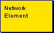
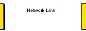
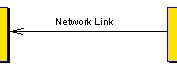
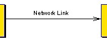
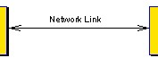
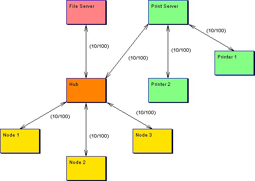

|
|
Network Chart
The network chart tool allows users to show how a number of elements
relate to each other. The nature of the elements and their relationship
is determined by the context in which it is used, i.e. the tool does not
enforce any particular type of usage. Links between elements can be
easily added, amended and deleted without restriction. Textual
information can be shown on any element and the links between them.
Color may also be used to denote different kinds of element and the
relationships between them.
To view the main multi-CASE help page click
here
|
|
|
|

Network Element
Definition: A network element is the only node type provided by the
network chart. This may be used to model any type of object which exists within
the network topology being modeled and therefore could represent items such as -
hardware devices, network nodes, organizational units etc.
Representation: A network element is represented by a rectangular node
shape with a contained textual name. By default the rectangle is yellow with a
black border. e.g.


Creation: A network element is added by right clicking on a network
chart diagram editor or the network chart icon within the project tree and
selecting the "Add Network Element " option from the menu. Position the element
outline where you wish it to be placed on the diagram and left click, enter the
name when prompted and click "OK".
Rules: A network element may have zero or more attached links.
Operations: Move Forwards/Backwards, Bring to Front, Send to Back,
Delete, Add Link To Element, Change Element/Text Color and Edit Element
Annotation/Name.
Network Link
Definition: A network link is used to model the fact that some kind of
relationship exists between two network elements. The
nature of this relationship is dependent upon the context in which the model is
being developed.
Representation: Network links are represented by lines between network
elements. Links can be shown with no arrows, single arrows pointing either way
or double arrows. To change the appearance, right click the link and select one
of the four "Show As ..." options. The example below shows the various
representations of a network link.




Creation: A network link is created by right clicking on the element
which is to be the source of the link and selecting "Add Link To Element" from
the menu. Position the other end of the link outline on the element that is to
be destination of the link and left click.
Rules: A link must have different source and destination elements,
i.e. recursion is not permitted.
Operations: Move Forwards/Backwards, Bring to Front, Send to Back,
Delete, Add/Remove Link Point, Show As -----, Show As <----,
Show As ---->, Show
As <--->, Change Link
Color, Edit Link Annotation/Label.
Example
Below is an example of the Network tool been used to model a computer
network.
